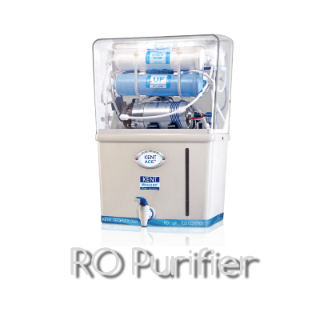

Reverse osmosis (RO) Water Purifier

Reverse osmosis (RO) is a water purification process that uses a partially permeable membrane to separate ions, unwanted molecules and larger particles from drinking water. In reverse osmosis, an applied pressure is used to overcome osmotic pressure, a colligative property that is driven by chemical potential differences of the solvent, a thermodynamic parameter. Reverse osmosis can remove many types of dissolved and suspended chemical species as well as biological ones (principally bacteria) from water, and is used in both industrial processes and the production of potable water. The result is that the solute is retained on the pressurized side of the membrane and the pure solvent is allowed to pass to the other side. To be "selective", this membrane should not allow large molecules or ions through the pores (holes), but should allow smaller components of the solution (such as solvent molecules, e.g., water, H2O) to pass freely.
What does Reverse Osmosis (RO) Purifier remove:
- Bacteria
- Virus
- Protoza
- Chlorine
What doesn’t Reverse Osmosis (RO) Purifier remove:
Advantages of Reverse Osmosis (RO) Purifier:
- RO is highly effective at removing contaminants.
- RO is energy efficient.
- RO provides clean water on demand.
- RO will save you money
రివర్స్ ఆస్మాసిస్ (RO) అనేది నీటి శుద్దీకరణ ప్రక్రియ, ఇది అయాన్లు, అవాంఛిత అణువులు మరియు త్రాగునీటి నుండి పెద్ద కణాలను వేరు చేయడానికి పాక్షికంగా పారగమ్య పొరను ఉపయోగిస్తుంది. రివర్స్ ఆస్మాసిస్లో, ద్రవాభిసరణ పీడనాన్ని అధిగమించడానికి అనువర్తిత పీడనం ఉపయోగించబడుతుంది, ఇది థర్మోడైనమిక్ పరామితి అయిన ద్రావకం యొక్క రసాయన సంభావ్య వ్యత్యాసాల ద్వారా నడపబడే కొలిగేటివ్ ఆస్తి. రివర్స్ ఆస్మాసిస్ నీటి నుండి అనేక రకాల కరిగిన మరియు సస్పెండ్ చేయబడిన రసాయన జాతులను అలాగే జీవసంబంధమైన వాటిని (ప్రధానంగా బ్యాక్టీరియా) తొలగించగలదు మరియు పారిశ్రామిక ప్రక్రియలు మరియు త్రాగునీటి ఉత్పత్తి రెండింటిలోనూ ఉపయోగించబడుతుంది. ఫలితంగా పొర యొక్క ఒత్తిడికి గురైన వైపు ద్రావణం అలాగే ఉంచబడుతుంది మరియు స్వచ్ఛమైన ద్రావకం మరొక వైపుకు వెళ్ళడానికి అనుమతించబడుతుంది. "సెలెక్టివ్"గా ఉండాలంటే, ఈ పొర పెద్ద అణువులు లేదా అయాన్లను రంధ్రాల (రంధ్రాలు) ద్వారా అనుమతించకూడదు, కానీ ద్రావణంలోని చిన్న భాగాలను (ద్రావణ అణువులు, ఉదా., నీరు, H2O వంటివి) స్వేచ్ఛగా వెళ్లేలా అనుమతించాలి.
రివర్స్ ఆస్మాసిస్ (RO) ప్యూరిఫైయర్ ఏమి తొలగిస్తుంది:
- బ్యాక్టీరియా
- వైరస్లు
- ప్రోటోజోవ
- క్లోరిన్
రివర్స్ ఆస్మాసిస్ (RO) ప్యూరిఫైయర్ తొలగించనివి:
రివర్స్ ఆస్మాసిస్ (RO) ప్యూరిఫైయర్ యొక్క ప్రయోజనాలు:
- కలుషితాలను తొలగించడంలో RO అత్యంత ప్రభావవంతమైనది
- RO అనేది శక్తి సమర్థవంతమైనది.
- RO కోరిక మేరకు స్వచ్ఛమైన నీటిని అందిస్తుంది.
- RO మీకు డబ్బు ఆదా చేస్తుంది